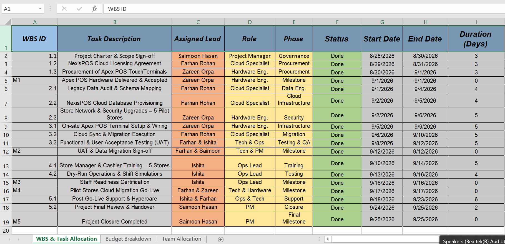

Group 02 – BISY2004 Project Management, Assessment 2
| Measure | Baseline | Actual | Variance | Comment |
|---|---|---|---|---|
| Schedule (closure date) | 25 September 2026 | 25 September 2026 | 0 days | All 13 work packages and five milestones closed on their baseline dates |
| Cost (total spend) | $106,986 | Within ceiling | No overrun | CAT-05 contingency drawn on once, for CR-02; the remainder was unspent |
| Scope (deliverables) | 13 packages, 5 milestones | 13 packages, 5 milestones | 0 | CR-03 was deferred rather than absorbed, so no uncontrolled growth |
| Quality (targets met) | 5 targets | 5 targets | 0 | UAT passed in full and was signed off at M2 |

Status was tracked in two places and reconciled between them. The Trello board gave daily movement, the register gave the weekly position, and the two were compared at the Friday retrospective. A card could not be marked Done on the board without the matching row being updated in the register, which is what kept the reported variance honest rather than optimistic.
A zero schedule variance should not be read as “nothing went wrong”. Three issues were raised during execution; the variance is zero because each was absorbed inside its own activity rather than allowed to reach the critical path. On a plan with no float that was not luck, it was the reason issues were escalated the same day they appeared.
| ID | Issue | Raised in | Owner | Corrective action | Status |
|---|---|---|---|---|---|
| ISS-01 | Receipt printer driver mismatch on the substituted terminal model, found during UAT | WP 3.3 | Farhan Rohan | Driver re-packaged and re-tested the same day. The card returned from Review / Testing to In Progress and closed within 24 hours | Closed |
| ISS-02 | Cloud sync latency spikes at two stores during peak-hour simulation | WP 4.2 | Zareen Orpa | LTE backup gateways deployed under CR-02, funded from contingency. Latency returned inside the two-second target | Closed |
| ISS-03 | Two cashiers missed their scheduled training session because of shift cover | WP 4.1 | Ishita | Catch-up dry-run held before M3, so staff readiness certification stayed complete | Closed |
ISS-02 is risk R1 appearing in a milder form – degraded sync rather than a full outage. Because R1 already had a funded response and a reserve behind it, the corrective action was a purchase decision inside contingency rather than an escalation, and the critical path never moved. ISS-01 traces back the other way, to CR-01: approving a hardware substitution created a re-test obligation, and the change log is where that obligation was recorded so that testing did not miss it.
| What happened | Lesson | Action for the enterprise rollout |
|---|---|---|
| Pre-orders and buffer stock protected milestone M1 | Procurement risk is cheapest to control before the critical path starts | Place hardware orders one full phase ahead of need |
| Dual-audit scripts caught schema mismatches before cutover | Verification either side of a migration is worth the day it costs | Make dual-audit a standard gate rather than a project-specific control |
| Dry-run simulations changed staff attitude faster than written guides | Rehearsal beats documentation for adoption risk | Budget dry-run time into every store wave |
| Zero float left no recovery room when ISS-01 and ISS-02 appeared | A schedule without float turns every small issue into a deadline threat | Carry two to three days of buffer per wave |
| One specialist held 35% of all scheduled hours | Single-point resource dependency is a schedule risk, not just a workload issue | Cross-train the cloud and hardware roles before scaling |
The project was formally closed on 25 September 2026 following the final review and handover in work package 5.2.